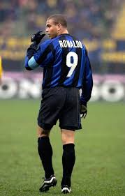
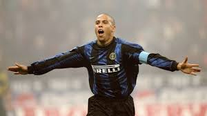
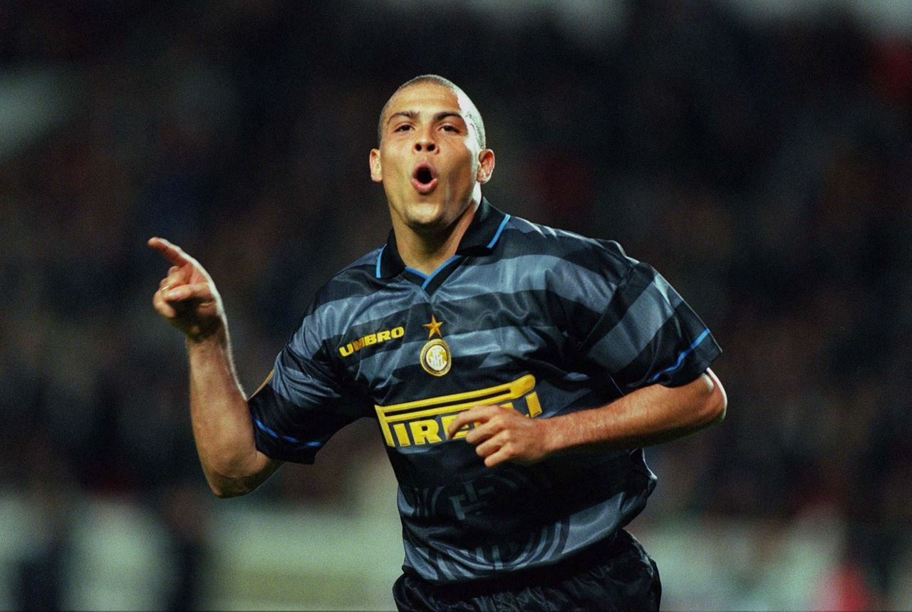

Ronaldo
The Best Player In The World



ABOUT
located in brazil
Ronaldo was more force of nature than footballer. He was an irrepressible dribbler, a powerful runner and an
unerringly precise finisher. In Italy, the term ‘fantasista’ is strictly reserved for playmakers, but it also applied to
this Brazilian striker, who was pure fantasy. Indeed,
his combination of blazing speed and stocky build was something usually seen only in virtual reality.